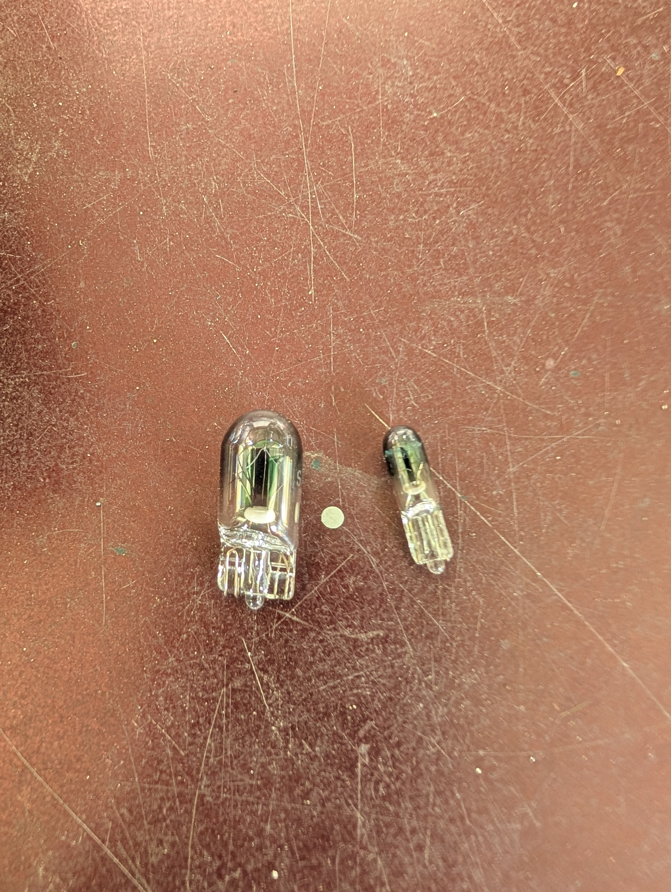
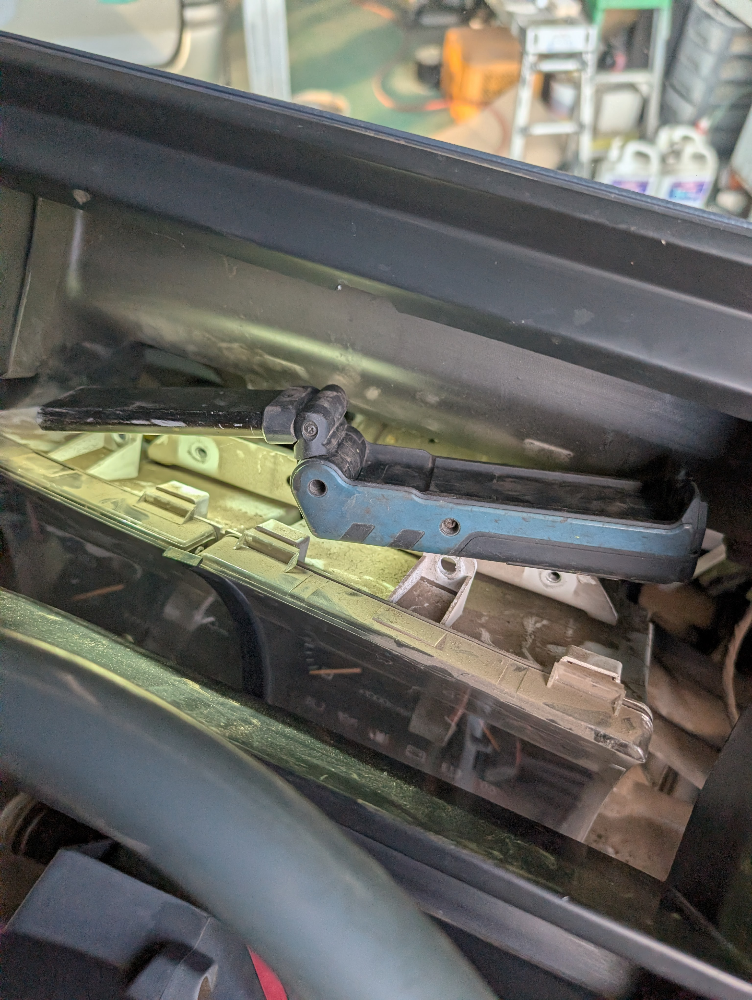

電装系・メーター
H5年式エルフ|メーターランプ不点灯の修理
メーター照明の一部が点灯せず、夜間にメーターが見えにくくなっていた為 不点灯のバルブを交換しました。
症状
メーターの一部が点灯しなくなり、夜間の視認不良
点検
メーター裏側を確認し、照明用バルブを取り外し確認すると、 2個のバルブが黒くなっていました。


修理内容
点灯しなくなったメーターランプバルブ2個を交換。
修理後
交換後に点灯状態を確認。 点灯しなかった箇所も含め、メーター照明がすべて正常に点灯することを確認